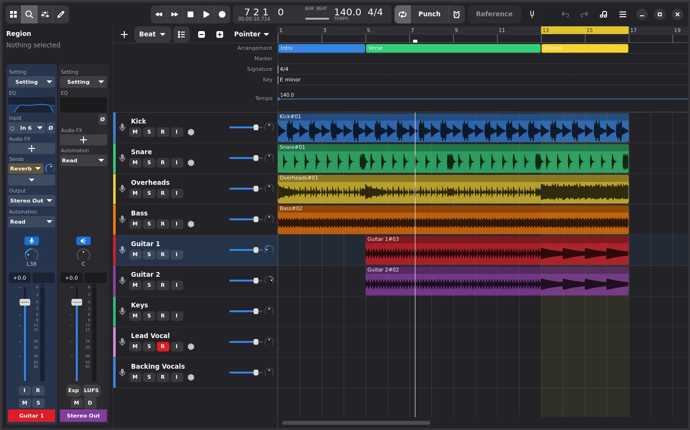
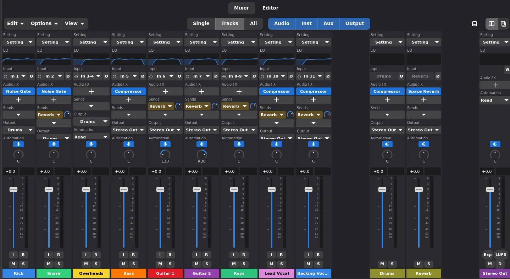

Record your band. Skip the setup.
Solstice is a complete recording studio for Linux, free and open source, with no subscription and no account. Open the Band Recording template, plug in and press R: every track already has its input, EQ and routing.
- GPL-3.0 open source
- Fedora and Debian 12
- VST3, CLAP and LV2
- PipeWire and JACK

Free, properly
No price, no subscription, no account and no paid tier. Solstice is GPL-licensed, so the source is yours to read, build and change.
Made for Linux
Built with GTK 4 and libadwaita, so it looks at home on a GNOME desktop, and drawn on the GPU. Audio runs through PipeWire or JACK.
Easy from the first take
First-run setup sorts out realtime priority, your interface and your plug-ins. Templates open as a working session, not an empty screen.
Familiar if you're switching
Control bar, inspector, library and mixer where you'd expect them, with the single-key shortcuts your hands already know.
How a session goes
From plugging in to a finished master
Most of a recording day is spent getting ready to record. Solstice does that part for you, so the band spends the session playing.
-
Step 1 · once
Set up in a minute
The first time Solstice opens, five short pages get your system ready.
- Checks that Solstice can run its audio ahead of other programs.
- Picks the interface you record through and its buffer size.
- Finds your VST3, CLAP and LV2 plug-ins, and installs Wine and yabridge for Windows ones.

-
Step 2
Pick Band Recording
The Project Chooser starts every song from a template, with its tempo, time signature and key set before you begin. Your own templates sit alongside the built-in ones.

-
Step 3
Everything's already wired
Band Recording opens with a track per input, each set to the next input on your interface.
- Kick, snare and overheads with EQ, gates on kick and snare, all feeding a glued drum bus.
- Bass with a compressor, two guitars panned wide, keys, lead and backing vocals.
- A reverb bus with sends already set.

-
Step 4
Track the band, then comp the best take
Arm the tracks and press R. Loop a section and every pass lands in a take folder; drag across the takes to build one performance from the best parts.
- Count-in, pre-roll, and a click that follows odd meters.
- Monitoring within a single audio period, and recording delay compensation measured with a loopback cable.
- A tuner that reaches down to 40 Hz, for drop tunings and bass.


A take folder: the lit parts of each take make up the comp. -
Step 5
Mix it and master it in the same place
Buses, VCAs, side-chains and plug-in delay compensation for the mix. Then the Loudness window measures it against a target such as streaming's −14 LUFS, with level-matched reference tracks to compare against a finished record.
- Export WAV or FLAC faster than real time, with dither and loudness normalisation.
- Stems of tracks and buses in one go.

Guitar and bass
The rig is on the channel strip
Set a track to Guitar DI or Bass DI and its inserts lay out as Pedals, Amp, Cabinet and Effects, the order a signal runs through a real rig. Record clean, and change the tone whenever you like.
- Neural Amp Modeler built inWith a starter library of amp and pedal captures.
- Impulse responses for cabinets and roomsStarter cabinets included.
- Noise Gate, Overdrive and SaturationWith factory presets for each.
- Re-amping through hardware outputsLeft out of bounces and exports automatically.

Switching
Familiar from the first session
Solstice is built around the layout and ideas that have become standard in professional recording software, so the years you've spent learning a DAW carry straight across.
- Control bar
- Transport, position, tempo, signature and the cycle, punch and metronome buttons along the top.
- Inspector and Library
- The selected region and channel strip on the left, with patches and settings to browse.
- Take folders and swipe comping
- Cycle-record passes into one folder and swipe across them to comp.
- Track Stacks
- Folder and summing stacks to group the drums or the backing vocals.
- Global tracks
- Sections, markers, signature, key and tempo changes above the tracks.
- Cycle and skip cycle
- Drag in the bar ruler to set the cycle, or Ctrl-drag to set a range that playback skips.
- Capture as Recording
- Keep the MIDI you played before you pressed record.
- Musical Typing
- Play instruments from the computer keyboard when there's no controller to hand.
- Track alternatives
- Try another arrangement of a track without losing the first.
- Space Play or stop
- R Record
- C Cycle
- K Metronome
- X Mixer
- E Editor
- I Inspector
- Y Library
- G Global tracks
Shortcuts that use Command on a Mac use Ctrl here. Songs come across too: audio files, MIDI files, Final Cut Pro XML and project bundles saved on a Mac all import, with tempo, key and recordings in place. More on switching.
Plug-ins
Bring your plug-ins, or use the twenty built in
Solstice hosts VST3, CLAP and LV2 effects and instruments, and Windows VST3s through yabridge. VST3 and CLAP plug-ins are scanned in a separate process, so one that crashes while loading can't take Solstice down with it.
Every built-in has factory presets, and any plug-in's settings can be saved as your own. More on plug-ins.
Effects
Channel EQ, Compressor, Limiter, Noise Gate, Saturation, Overdrive, De-esser, Stereo Delay, Reverb, Neural Amp Modeler, Impulse Response
Instruments
Drum Kit with its own synthesised kit and step patterns in over a dozen styles, Sampler, Solstice Synth
MIDI FX
Arpeggiator, Chord Trigger, Note Repeater, Scale Quantize, Transposer, Velocity Processor
Everything else
A full studio, not a sketchpad
Recording
Take folders, count-in and pre-roll, low latency monitoring, measured delay compensation and crash-safe takes.
Editing
Audio file editor, piano roll, Event List, Quantize with swing and groove templates, and automation.
Drums
A step sequencer, drum maps, and a Hits view with a row per drum sound.
Mixing
Aux buses, VCA faders, side-chain keying, cue mixes and channel strip settings.
Mastering
LUFS, loudness range, true peak, correlation and spectrum, with reference tracks.
Projects and safety
Templates, atomic saves, autosave and crash recovery, and importing audio, MIDI, Final Cut Pro XML and project bundles.
Free to download. Free to keep.
No trial, no licence key and no account. Install Solstice on Fedora or Debian 12 and start recording today.